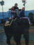
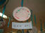
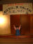

2001年12月31日撮影
白浜アドベンチャーワールドで、ぞうさんの背中に乗りました。
高かったです。ぞうさん、、、痛かったでしょ。。。ゴメンネ。2001年12月23日 14時42分撮影
まいネェネェがトナカイさんで、ゆりネェネェがサンタさんです。2001年12月23日 11時41分撮影
ネェネェんちでクリスマス会。三姉妹みたいでしょー！2001年11月25日 12時51分撮影
七・五・三が終わったら髪の毛を切ろうねとの約束通り、今日
初めてシャンプー＆カットをしてもらいました。とってもキンチョー！2001年11月24日 10時55分撮影
三輪さんへ「七・五・三」のお参りに。良いお顔して・・・と言うと、
知って変なお顔をして、ケタケタ笑い転げる始末。
いっぱい撮ったけど、まともな写真は極わずかです。トホホ（涙）！2001年11月23日 12時10分撮影
日本三大知恵文殊で有名（？）な「阿部の文殊さん」で。
由起子の足下に見えるのが花苗8000株で作られた「馬」です。
2001年11月17日 11時00分撮影
由起子の作品・・・これなぁに？とたずねると「ママァ！」と言います。
ナンデヤネン？ドコガママヤネン？と言いたくなるのを我慢・我慢！2001年11月17日 10時41分撮影
保育所の「作品展とふれあい広場」。由起子の教室では、大きな
紙に自由に落書きできるお絵かきｺｰﾅｰがありました。2001年11月11日 14時18分撮影
万歳ポーズが好きな由起子です。大社町からの帰り道、観光で
立ち寄った「大根島／由志園」。お庭の紅葉がとっても綺麗です。
2001年11月11日 7時59分撮影
大社町の合唱団と交流のひとときを持った会場【日の出旅館】。
来年の桜井混声20周年記念には、大社の人達をご招待です。